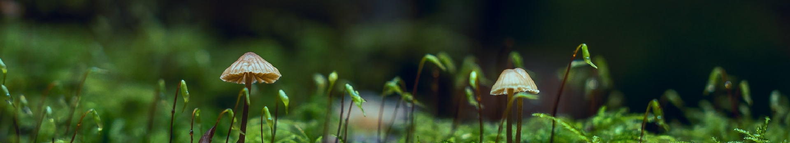
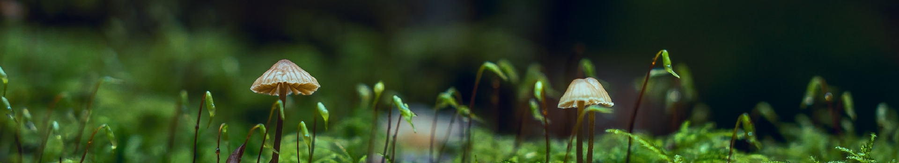
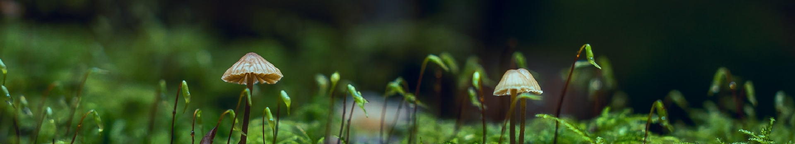
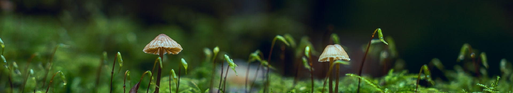

Le voyage de Kalil.
Le Japon est un pays qui fait réver de part ces beaux paysages, sa culture ou meme leurs magnifique monument à visiter.
Parmis ces monument j'ai choisis de vous présenter quelque un d'entre eux.

Le Byōdō-in (平等院?) est un temple bouddhiste établi par Fujiwara no Yorimichi en 1052, à la fin de l'époque de Heian, dans la ville de Uji dans la préfecture de Kyōto au Japon.
Le bâtiment le plus célèbre est le pavillon du
Phénix ou pavillon d'Amida, dont la construction est achevée en 1053. Le propriétaire précédent, Minamoto no Tōru, utilisait le bâtiment comme résidence de campagne.
Les autres bâtiments rattachés au temple ont été détruits
pendant la guerre civile en 1336. Le temple a notamment été le lieu de la première bataille d'Uji, en 1180, qui a été au commencement de la guerre de Gempei.
Le hall central abrite une image du bouddha Amida. Le toit de la
salle est surmonté de deux statues de fenghuang, ou phénix chinois, appelés hōō en Japonais, d'où le nom de hōōdō (鳳凰堂?, litt. « pavillon du Phénix »).
Le bâtiment est entouré d'un jardin avec étang du type « Terre pure ».

Le temple de Fuji

Le temple de Meiji-Jingu

Le temple de Senso-Ji

Le temple de Kinkaku-Ji
Bien que ces monuments sont magnifique à visiter, ce n'est pas que il a bien d'autre chose à visiter au Japon.
Voiçi donc quelques villes qui pourraient être interessante à visiter.

Tokyo est la capitale du Japon et la métropole la plus peuplée du monde. Entre ses temples traditionnels majestueux et les néons brillants de Shibuya, c’est l’une des villes les plus captivantes de la planète.
Tokyo a quelque
chose à offrir à tous et est un endroit à visiter au moins une fois dans sa vie.
Kyoto, souvent considérée comme la plus belle ville du Japon, était la capitale japonaise jusqu’à ce que le gouvernement déménage à Tokyo en 1868. Cependant, avec ses plus de 1000 temples bouddhistes, la ville est restée le centre religieux du Japon.
Kyoto abrite également certains des monuments les plus emblématiques du Japon, des jardins, temples et œuvres d’art plus exquis et sublimes que tout.